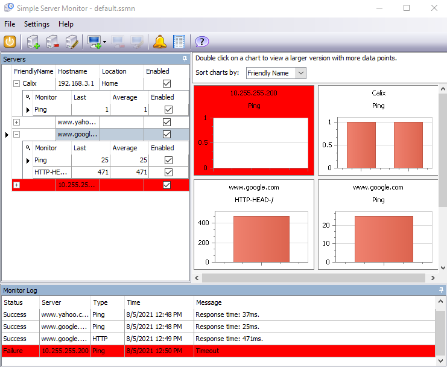

Troubleshooting-key skill? Note: do not only rely on the book for the answer. Consult LinkedIn Learning and Wikipedia.
(50) 1. Reflect on what you have learned in this networking course-the concepts and also the experiences of getting both physical and virtual devices to work. Think about this in terms of any industry and the new devices that you have learned about. Briefly explain why troubleshooting is a valuable skill for any employee's toolkit.
Read Hands-On Project 14-1 As you work through the problem, you will write down your answers in the text boxes below.
(50) 2. Step 2-list the layer(s) of the OSI model that you tested using your web browser.
(50) 3. Step 3-provide the response you received from the nslookup command.
nslookup
(50) 4. Step 4-provide the response you received from the ping command.
ping
(50) 5. Step 4-list the layer(s) of the OSI model that you tested using the ping command.
(50) 6. Step 5-list the layer(s) of the OSI model that are most likely the problem.
Do Hands-On Project 14-2 As you work through the problem, you will write down your answers in the text boxes below.
(50) 7. Step 4. list the IP addresses for the two computers exchanging the most packets. Note-your answers will vary, especially if you have other browser tabs open.
In step 4, make a screen shot of the running Wire Shark application, any window. Save the screen shot as "Ex1" in your ' ' folder. You will be combining screen shots from several exercises at the end of this assignment, just as you did in Formative00-PDF File Creation.
Do Hands-On Project 14-3
Step 6. Simple Server Monitor has the ability to send emails when a device fails. Consider who would be the recipient of these types of emails. (50) 8. Briefly explain the benefit to an organization of this feature.
(50) 9. After step 10 make a screen shot of the running Simple Server Monitor application. Make sure that the 'Servers', 'Monitor Log' and the charts windows are visible. It will look something like this:  Save the screen shot as "Ex2" in your ' ' folder. You will be combining screen shots from several exercises at the end of this assignment, just as you did in Formative00-PDF File Creation.
There are no Packet Tracer Labs for this chapter
Use a web browser to verify that you have published your website to https://classes.winona.edu/... Check that your name, StarID, email, class, semester, section and all of your answers are correct and visible. From the menu choose File>Print... and using "Microsoft Print to PDF" save a copy of this assignment as a .pdf file in your ' ' folder.
(50) 10. Save your file 'WebPage.pdf' to the ' ' folder.
Create one .pdf (portable document format) file from the screen shots that you have taken by following these steps.
(50) 11. Save your file 'ScreenShots.pdf' in your ' ' folder.
Use PDFill to merge the WebPage.pdf file with the ScreenShots.pdf file, and save it as 'Summative14.pdf' in your ' ' folder.
(50) 12. Upload your file 'Summative14.pdf' to the D2L 'Summative14' Assignment folder.
Use a browser to view your completed and published website at: https://classes.winona.edu/... Ensure that you have linked this assignment on your home page. Note that your screen shots do not have to be completed to perform this step.